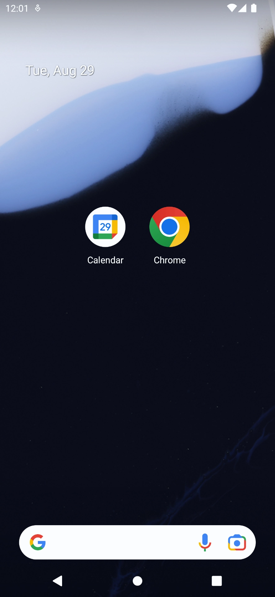
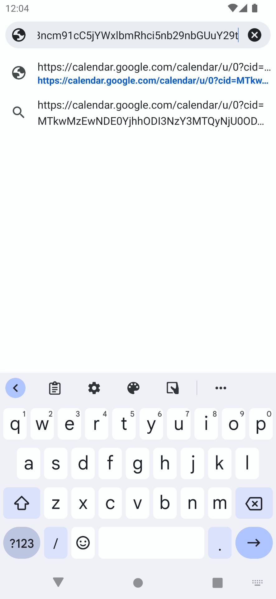
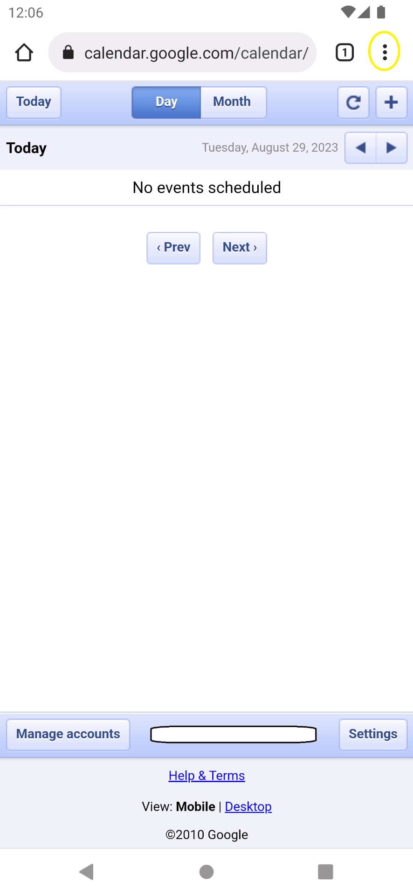
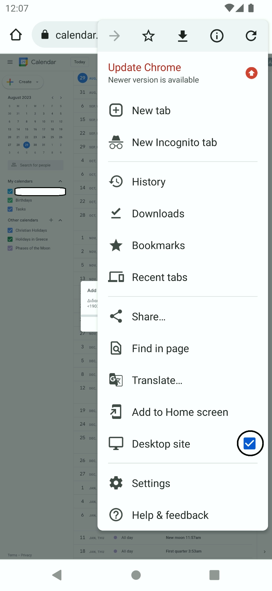
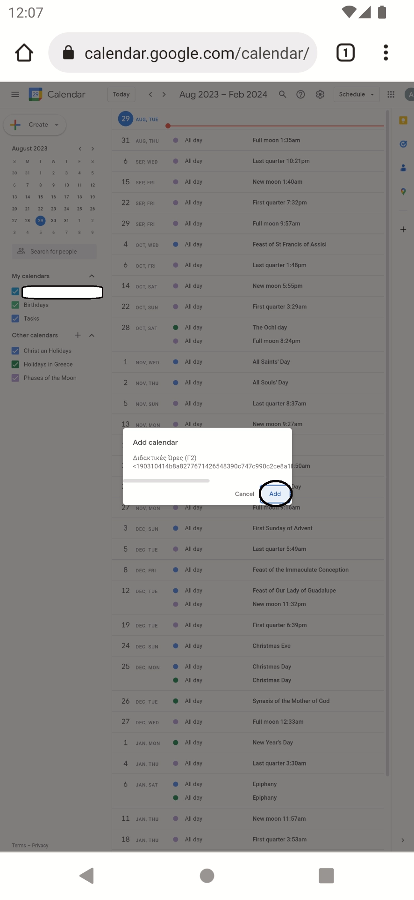
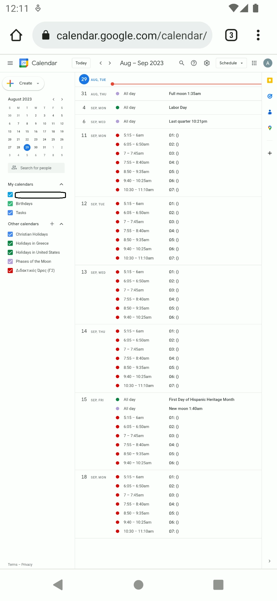
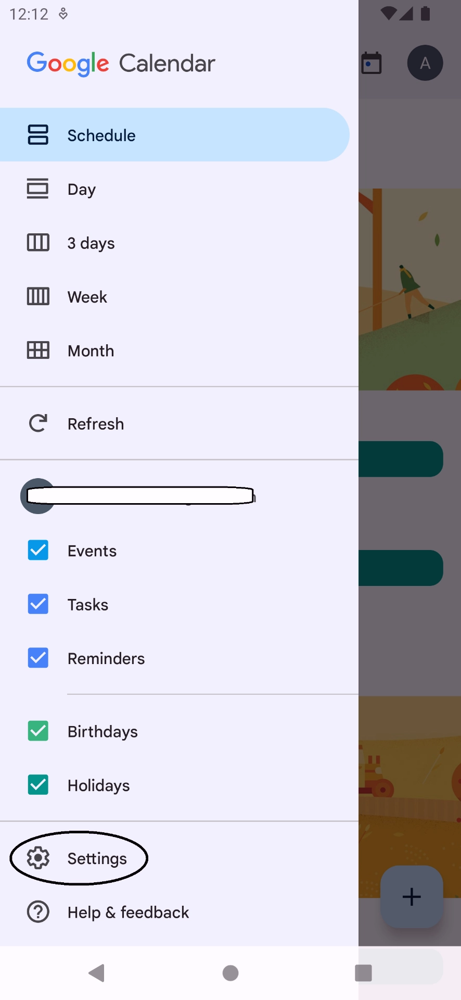
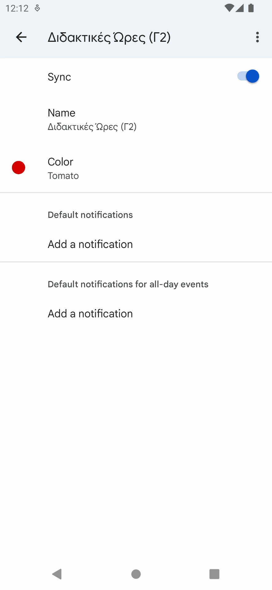
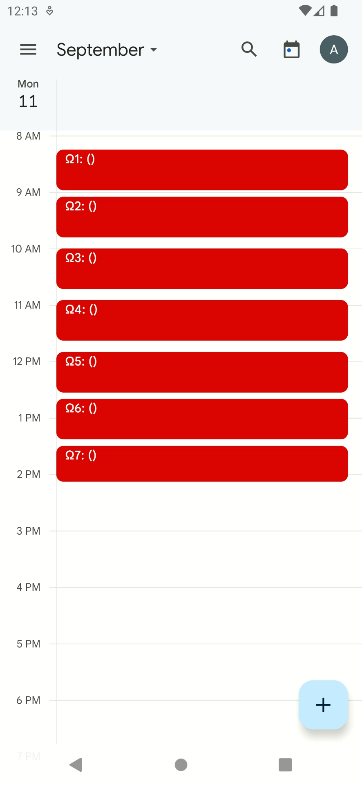

ΟΔ. ANDROID
Αυτός ο οδηγός δείχνει πώς να βάλετε το σχολικό πρόγραμμα του Γ1 στο Ημερολόγιο μίας συσκευής Android (Samsung, Xiaomi κ.λπ.) σε 7 βήματα.
Βήμα 1:
Εγκαταστήστε απο το Play Store τις εφαρμογές Google Calendar και Google Chrome, αν δεν τις εχετε ήδη.

Βήμα 2: (δύο τρόποι)
α) Πατήστε εδώ, ή
β) Αντιγράψτε τον εξής σύνδεσμο στο Chrome:
Υπάρχει περίπτωση, χάρη σε ενημερώσεις της Google, να ανοίξει η εφαρμογή Google Calendar, με την δυνατότητα να προσθέσετε κατ' ευθείαν το ημερολόγιο. Σε αυτή την περίπτωση, πατήστε Προσθήκη, και αγνοήστε τα υπόλοιπα βήματα.

Βήμα 3:
Αν η οθόνη σας φαίνεται όπως στην εικόνα 1, πατήστε τις τρείς τελείες πάνω δεξιά και μετα πατηστε "Εμφανιση υπολογιστή" ή "Desktop site" (εικόνα 2).
Άν φαίνεται όπως στην εικόνα 1 του Βήματος 4, παραλείψτε αυτο το βήμα.


Βήμα 4:
Εφόσον η οθόνη σας φαίνεται οπως την εικόνα 1, όλα έχουν πάει σωστά.
Κάντε μεγένθυνση, ξετσιμπώντας τα δυο δακτυλά σας απο το κουτί, ωστε να φαίνεται σωστά. Eπιλέξετε το κουμπί "Προσθήκη" ή "Add".

Βήμα 5:
Αφού πατήσετε το κουμπί, θα πρέπει να δείτε το ημερολόγιο να γεμίσει, και στην αριστερή στήλη να προστείθεται ενα κόκκινο τσεκ που απο δίπλα γράφει "Διδακτικές Ωρες Γ1". (εικόνα 1) Αυτό σημαίνει πως έχετε κανει τα πάντα σωστά μεχρι στιγμής.

Βήμα 6:
Κλείστε το Chrome, και ανοίξτε το Calendar. Πάνω αριστερά θα δείτε τρείς γραμμές, πατήστε τις.
Κυλίστε κάτω και πατήστε "Ρυθμίσεις" ή "Settings" (εικόνα 1)

Βήμα 7:
Πατήστε το "Διδακτικές Ώρες Γ1", (μπορει να χρειαστεί να πατήσετε το "Δείτε Περισσότερα" ή "See More" για να εμφανιστεί), και ενεργοποιήστε το μοχλό που συνοδεύεται απο την λέξη "Συνχρονισμός" ή "Sync". Σε αυτό το σημείο, μπορείτε να αλλάξετε το χρώμα και όνομα εμφάνισης του ημερολογίου.

Πηγαίντε πισω στο ημερολόγιο, και θα πρέπει να φαίνεται καπως έτσι: (απο 11 Σεπτ, καθημερινες)

Συγχαρητήρια! Προσθέσατε το ημερολόγιο πρόγραμμα του Γ1 στο Google Calendar!
Αν δέν φαίνεται έτσι, κάτι πήγε λάθος. Παρακαλώ επικοινωνηστε μαζί μου.
(Οι φωτογραφίες χρησιμοποιούνται ενδεικτικά.)